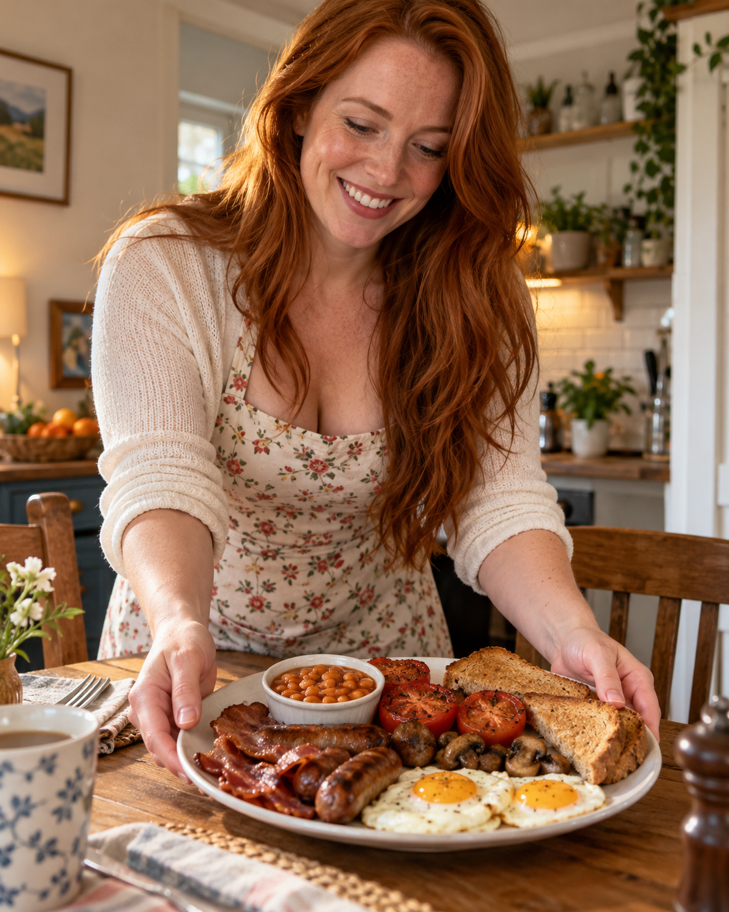

ROLE
Kevin's Gran
The loving family anchor who cares for Kevin when his memories and the world around him no longer agree.

THE PERSON WAITING AT HOME
“Ah, there ye are, pet.”
Loving. Watchful. Stronger than she feels. Always worrying. Gran is the person waiting at home, trying to keep Kevin safe after coming terrifyingly close to losing him.
WHO IS GRAN?
Gran finds Kevin unconscious at the bottom of the old cellar steps and cannot find a pulse. From that moment, every silence and strange look carries the fear that she might lose him all over again.
She sits beside his hospital bed, holds his hand and speaks to him in the soft Geordie voice that makes him feel safe. Her knitting, tea and gentle fussing are ordinary things Kevin desperately needs.
Gran has already lost her son and daughter-in-law. Kevin is the family she has left, which makes his determination to chase impossible answers both understandable and almost unbearable for her.
AT A GLANCE
ROLE
The loving family anchor who cares for Kevin when his memories and the world around him no longer agree.
NATURE
Gran notices every change in Kevin and tries to protect him without letting him see how frightened she really is.
QUIET COMFORT
Her needles, familiar voice and hand around Kevin's give him something real to hold onto in the hospital.
GREATEST FEAR
Having already endured devastating loss, Gran cannot bear the thought of Kevin disappearing from her life as well.
STORY APPEARANCES
Gran first appears in The Four Rings, where her love gives Kevin a home to return to—and makes leaving far harder.
PEOPLE CLOSE TO GRAN
Family is at the centre of Gran's life. Her love for Kevin is strengthened by everything and everyone she has already lost.

GRANDSON
Kevin is the centre of Gran's world. She wants to believe him, protect him and keep him close enough not to lose again.
SON
Gran has spent years grieving for her son, while Kevin's memories suggest the story of his death may not be complete.

DAUGHTER-IN-LAW
Gran shares her grief and devotion to Kevin, carrying the family's love after another unbearable loss.
ONE DEVOTED GRAN
Gran cannot follow Kevin into every danger or force him to accept her version of the truth. All she can do is love him, wait for him and hope that the boy she nearly lost will always find his way home.
Meet the Rest of the Cast